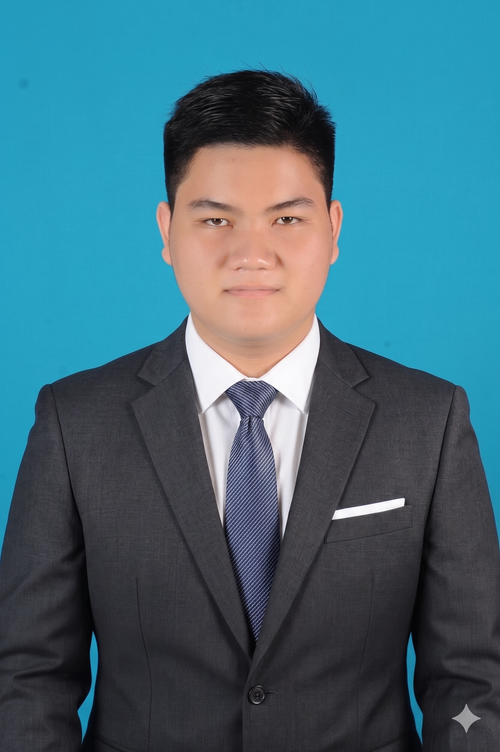
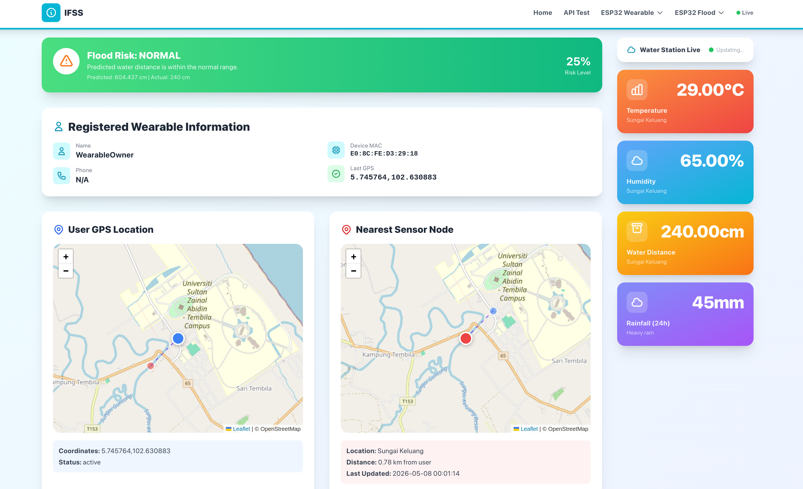

Hello, I'm
Bachelor of Computer Science student at UniSZA (3.95 CGPA). Passionate about building impactful web applications, embedded IoT systems, and elegant software solutions. Currently seeking an internship.

I am a dedicated Bachelor of Computer Science (Internet Computing) student at Universiti Sultan Zainal Abidin (UniSZA). With a strong academic foundation and practical experience in full-stack web development and IoT ecosystems, I strive to engineer solutions that bridge the gap between hardware and software.
2023 - Present
Bachelor of Computer Science (Internet Computing) with Honours • Current CGPA: 3.82
2019 - 2021
Diploma in Electronic Engineering (Computer) • CGPA: 3.49
Web Development
Hardware Integration
PC Troubleshooting
Current skills vs. industry requirements for a System Administrator role
| Skill Area | Industry Requirement | My Current Level | Gap |
|---|---|---|---|
| Linux OS Administration | Proficient (RHEL/Ubuntu/Debian) | Intermediate (AlmaLinux, basic admin) | Low |
| Networking & Protocols | Strong (TCP/IP, DNS, DHCP, VPN, Routing) | Basic (covered in coursework, limited hands-on) | High |
| Scripting & Automation | Proficient (Bash, Python, Ansible) | Basic (PHP scripting, basic Bash usage) | Medium |
| Containerization & Virtualization | Familiar (Docker, Kubernetes, VMware) | Intermediate (Docker used in FYP project) | Low |
| Security Hardening | Familiar (firewalls, SSH hardening, patch mgmt) | Beginner (theoretical via coursework) | High |
| Hardware Troubleshooting | Proficient (server diagnostics, replacements) | Proficient (1 year experience at Mulqeen Technology) | None |
| Communication & Teamwork | Strong (documentation, cross-team support) | Good (group projects, customer-facing IT support) | Low |
Responsibilities: Managing, maintaining, and securing IT infrastructure. This involves configuring servers (Linux/Windows), managing user accounts, monitoring system performance, and ensuring high availability of networks and data centers.
Required Skills: Deep knowledge of OS environments (Linux/AlmaLinux), bash scripting, server hardware troubleshooting, virtualization (Docker), and network protocols.
Relevance to Cybersecurity: System Administrators are the first line of defense. Proper server hardening, patch management, access control, and continuous monitoring are critical to preventing breaches and ensuring enterprise security.
Planned Certifications (To Pursue): RHCSA (Red Hat Certified System Administrator), CompTIA Linux+, CCNA, and AWS Certified SysOps Administrator.
Tools to Learn: Advanced Wireshark, Ansible (for automation), Kubernetes, and Python for system scripting.
2-Year Goal: Successfully complete my internship and secure a full-time role as a Junior Linux/System Administrator to gain hands-on enterprise infrastructure experience.
5-Year Goal: Progress into a Senior System Administrator or Cloud Infrastructure Engineer role, leading deployment architectures and securing large-scale server networks.
2025 - Present | UniSZA

Developed a real-time environmental data and location tracking system. Built a water-level sensor network using ESP32 microcontrollers and a wearable GPS pendant. The backend is powered by Laravel (PHP) and MySQL, deployed securely via Docker on AlmaLinux.
2025 | UniSZA
A gaming partner discovery platform for Southeast Asian gamers. Developed with CodeIgniter 4, featuring user authentication, role-based access, profile management, premium search filters, and an admin dashboard using an MVC architecture.
2021 - 2022 | Mulqeen Technology
Diagnosed and resolved hardware and software issues for customers. Troubleshot, repaired, and upgraded desktop and laptop systems while providing clear technical support and excellent customer service.
Telekom Malaysia is the primary driver of Malaysia's digital infrastructure. I align deeply with TM's vision to shape a "Digital Malaysia" Working at TM would provide unparalleled exposure to massive, enterprise-grade telecommunications and networking systems, making it the perfect environment for a System Administrator to grow.
With my background in Computer Science (Internet Computing) and practical experience setting up IoT network systems using AlmaLinux and Docker, I bring a solid understanding of modern, containerized Linux environments. I can help streamline server deployments and apply my hardware troubleshooting skills to maintain TM's vast physical and virtual infrastructure.
I am confident that my dedication and technical skills align well with the requirements for a System Administrator position at Telekom Malaysia. My experience spans from low-level PC repair to full-stack web and IoT application development. This means I can quickly adapt to new technologies and environments.
My core competencies in Linux administration (specifically AlmaLinux), Docker containerization, backend infrastructure setup, and hardware diagnostics are directly applicable to managing enterprise IT systems. Furthermore, my 3.95 CGPA demonstrates my ability to learn complex technical concepts quickly.
Strengths: My adaptability and problem-solving skills. I'll try my best to learn
any new concepts and I'm willing to do anthing within my capacity to solve
it.
Weaknesses:
First, I have less
hands-on experience with enterprise-grade routing and switching hardware. Second, I tend to be a
slow and deliberate learner I need more time than most to fully internalize new concepts.
I am currently seeking an internship opportunity to apply my skills and gain industry experience. Whether you have a position available or just want to connect, my inbox is always open.
Say Hello